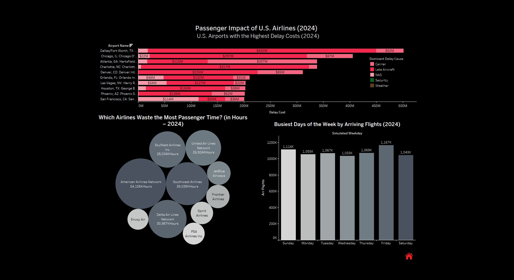
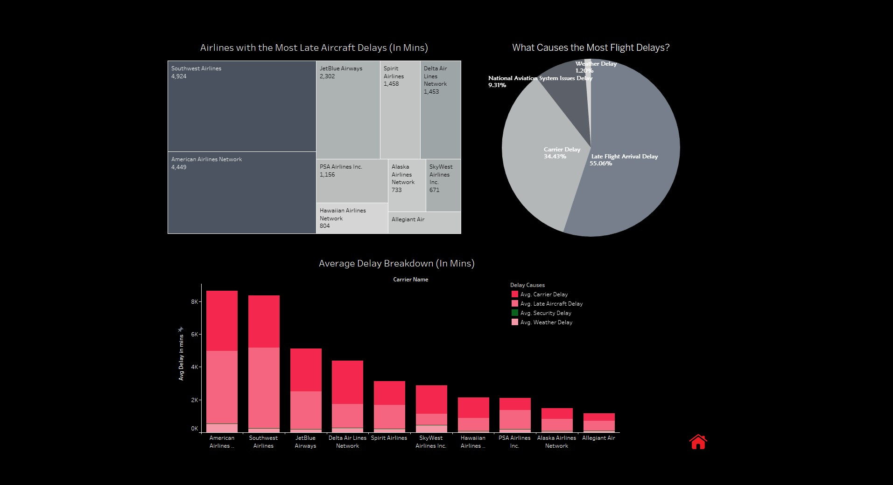
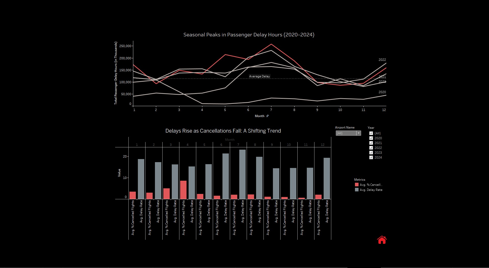

Airport impact
Highlights the airports and airlines where delay time translates into the largest passenger impact - making it easy to spot the biggest cost centers at a glance.
A Tableau dashboard built to explain where delays cost the most, what causes them, and when they peak -helping translate airline disruption data into operational insights.

Highlights the airports and airlines where delay time translates into the largest passenger impact - making it easy to spot the biggest cost centers at a glance.

Breaks delays into root causes (carrier, late aircraft, NAS, weather) and compares airlines by average delay mix- useful for diagnosing what’s actually driving disruption.

Shows seasonal peaks in passenger delay hours and the shift between cancellations and delays over time - helping identify “high-risk” months and changing disruption patterns.